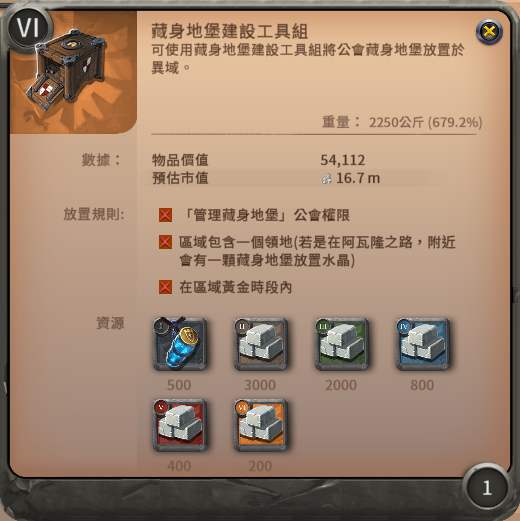

藏身地堡
關於地堡的建造、設施、營養值、能量等級、防禦等等。
種類及狀態
| 地圖上圖標 | 類型(顏色) | 說明 |
| 綠色地堡 | 自己公會的地堡。 | |
| 紫色地堡 | 自己聯盟的地堡。 | |
| 藍色地堡 | 別的聯盟的地堡，你有權限進入。 | |
| 紅色地堡 | 別的聯盟的地堡，你沒有權限進入。 |
| 地圖上圖標 | 類型(旗子) | 說明 |
| 沒有旗子的地堡 | 一般地堡。 | |
| 有旗子的地堡 | 總部地堡，只有地堡公會的人才能進入。 即使是聯盟地堡，如果是總部的話一樣進不去。 |
| 地圖上圖標 | 類型(狀態) | 說明 |
| 地堡邊緣為藍圈 | 無敵狀態，無法被攻擊。 | |
| 地堡邊緣為黃圈 | 地堡圖黃金時段前20分鐘為脆弱狀態，無法直接攻擊， 總部地堡如果達到一定的能量等級，則會是無敵狀態(藍圈)。 |
|
| 交叉劍圖示 | 地堡被宣，此時為可攻擊狀態，可以被破壞槌攻擊。 | |
| 藍色背景上的鎚子圖示 | 正在建造中的地堡，處於無敵狀態，無法被攻擊。 | |
| - | 紅色背景上的鎚子圖示 | 正在建造中的地堡，處於第一個或第二個20分鐘的脆弱狀態， 可以被攻擊。 |
建造
首先需要一個藏身地堡建築工具包，找工匠製作。
工具包重2,250公斤，記得不要負重。
參考配裝：(不推薦速度較慢的牛、冬熊、恐熊。)
地堡放置條件：
- 擁有公會的藏身地堡管理權限。
- 一個公會最多蓋6個地堡，同一張圖只能蓋1個地堡。
- 處於地圖黃金時段內。
- 黑區大陸有領地的地圖，或是阿瓦隆內藏身地堡水晶旁。
- 地堡只能放置在平坦的地型。
- 地堡無法放置在野怪刷怪點上。
-
地堡無法放置在：
- 距離其他地堡 180m 內
- 距離區域出入口 200m 內
- 距離城堡 110m 內
- 距離領地燈塔 110m 內
- 距離寶箱 110m 內
- 距離魔法聖墓(產精華,附魔藥水用) 110m 內
- 距離城堡哨站 50m 內
- 距離地獄之門生成點 40m 內
地堡放置後，20分鐘內可以被破壞槌攻擊，若防守成功會進入無敵狀態，
下一個黃金時段開始時又會有20分鐘的脆弱狀態，兩次20分鐘守完，即成功建造。
設施
| 等級 | 設施 | 升級花費 |
| Lv1 | 5個建築地、維修站 | - |
| Lv2 | 20個建築地、維修站、市場、農牧商人 |
|
| Lv3 |
25個建築地、維修站、市場、農牧商人、 神器鑄造店、能量操縱師、遠征管理員、 奇物商人、2x2建築地(可建造公會大廳) 誰會在地堡裡打HCE？ |
|
營養值
地堡的營養值會以一定的速度消耗，需要持續餵食物。
| 等級 | 消耗速度(1天) | 儲存容量(營養值) | |
| Lv1 | 15,000營養值 | 牛肉三明治(~20.55) | 150,000(10天份) |
| Lv2 | 20,000營養值 | 牛肉三明治(~27.4) | 400,000(20天份) |
| Lv3 | 25,000營養值 | 牛肉三明治(~34.25) | 750,000(30天份) |
關於運哪種食物最佳，可以參考以下資料：運送食物到地堡
能量等級
待更新
攻擊
地堡圖黃金時段前20分鐘，地堡邊緣若呈黃圈則為脆弱狀態。此時，該地圖的領地公會可以在地堡門口支付攻擊費用，然後就可以直接攻擊。
阿瓦隆地堡可以由任何公會宣布攻擊。
如果地堡的防禦點數沒有全滿，黃金時段前20分鐘不用宣就能直接攻擊。
| 等級 | 攻擊費用 | 防禦點 | 耐久度 | 耐久度回復速度 |
| Lv1 |
|
2 | 50,000 | 25/秒 |
| Lv2 |
|
4 | 100,000 | 75/秒 |
| Lv3 |
|
5 | 150,000 | 100/秒 |
如果地堡的耐久度降到0，防禦點會-1。
- 如果還有防禦點，則地堡會直接進入無敵狀態(藍圈)，直到下一個黃金時段開始。
- 如果防禦點歸零，則地堡會被拆掉。
如果地堡在黃金時段前20分鐘內，耐久度沒有降到0，那麼防禦點會+1，不會超過上限。
地堡被破壞
如果地堡被拆，所有在裡面的人都會直接被趕出來，並且地堡內任何建築、傢俱和裝備都會被摧毀，除了個人倉庫內的裝備。(公會倉庫的物品會被摧毀)
個人倉庫內的裝備則會被送到最近的城市的公共倉庫，郵件會通知送到哪。
裝備會放在特殊的標籤頁中，需要支付銀幣才能拿出來，費用與物品重量成正比。
地堡重生懲罰
如果死亡後選擇在地堡重生，會需要等待一段時間才能出地堡。
| 重生次數 | 離開地堡冷卻 |
| 1 | 0秒 |
| 2 | 30秒 |
| 3 | 1分鐘 |
| 4 | 2分鐘 |
| >= 5 | 4分鐘 |
編輯紀錄
作者: runnywolf(僅撰寫部分資料, 以及翻譯)
最後編輯日期: 2023/01/14